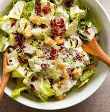

Ceasar's Salad

Description
A tasty salad perfect for a light meal.
Ingredients
- 1 medium ciabatta loaf
- 3 tbsp olive oil
- 2 skinless, boneless chicken breasts
- 1 large lettuce, leaves separated
For the dressing
- 1 garlic clove
- grated parmesan cheese
- 5 tbsp mayonnaise
- 1 tbsp white wine vinegar
Steps
- Heat oven to 180C fan. Tear the ciabatta into big, ragged croutons, or cut with a bread knife. Spread over a large baking sheet or tray and sprinkle over 2 tbsp olive oil.
- Rub the oil into the bread and season with a little salt if you like. Bake for 8-10 minutes, turning the croutons a few times during cooking so they brown evenly.
- Rub the chicken breasts with 1 tbsp olive oil and season. Place a pan over medium heat until hot. Lay chicken in pan and leave for 4 minutes.
- Turn the chicken, then cook for 4 minutes more. Check if it's cooked by poking the tip of a sharp knife into the thickest part; there should be no sign of pink and juices will run clear.
- Crush the garlic clove. Mix with parmesan cheese, mayonnaise and the vinegar. Season to taste. It should be the consistency of yoghurt - add some water if it's too thick.
- Tear some lettuce leave into large pieces and put in a large bowl. Pull the chicken into bite-sized strips and scatter half over the leaves, along with half the croutons.
- Add most of the dressing and toss with your fingers. Scatter the rest of the chicken and croutons, then drizzles with the remaining dressing. Sprinkled some parmesan on top and serve straight away.